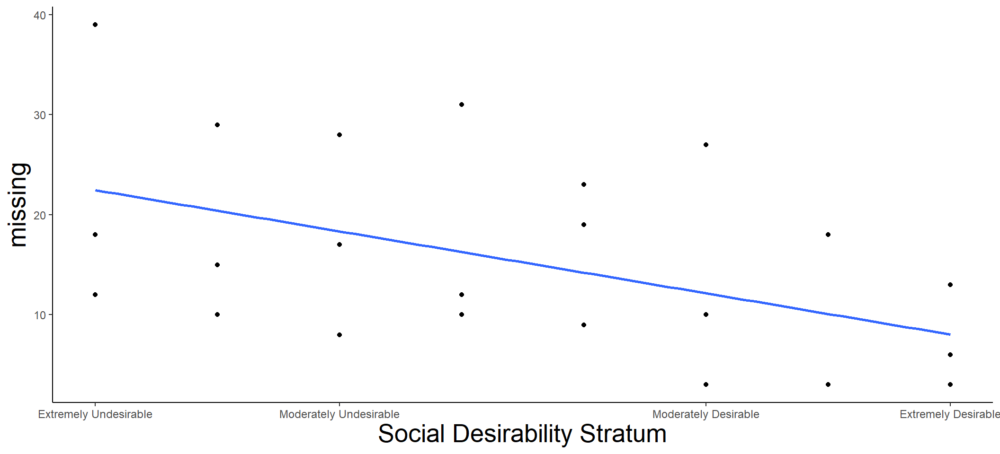
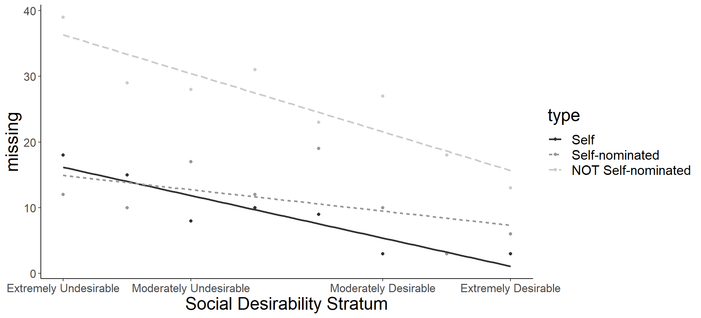

our take-away message meant to go here - was expecting title.
Predictive Non-response via Item Characteristics
Alicia A. Stachowski 1
John T. Kulas 2
1 University of Wisconsin - Stout
2 Montclair State University
Introduction
This paper explored patterns of missing data by item characteristics including item desirability and indices of readability, using both self and informant ratings, and classification of missing responses in three stages: 1) examining the most recent and uniquely apt General Social Survey data for patterns in the reasons for non-response, 2) exploring overall social desirability and readability as they relate to missing responses, and 3) considering potential differences in missing responses across self-, self-nominated other, and non-self-nominated other ratings.
H1: There exist differing reasons for non-response.
H2: Item readability is negatively associated with non-response.
H3: Item social desirability is negatively associated with non-response.
H4: Item social desirability will be more strongly related to non-response than readability.
H5: The item social desirability effect remains after making considerations of rater source.
Methods
Data from three sources were used to explore the above predictions: 2020 data from the General Social Survey, ratings of item social desirability, and personality ratings from undergraduates.
Missingness Reason. The GSS included the following categories: “don’t know,” “no answer,” and “skipped on the web.”
Item Social Desirability. Ratings of the social desirability of 2,413 IPIP personality indicators were made along a 9-point scale from: (-4) extremely undesirable to (+4) extremely desirable (see, for example, Edwards, 1957). Graduate student raters’ (n = 6) inter-rater consistency estimates using a 2-way random model was .96.
Readability. Four readability indices included: 1) Easy Listening Formula (ELF; Fang 1966), 2) the FOG Navy Readability Index (FOG-NRI; Kincaid et al., 1975), 3) the Flesch-Kincaid Grade Level (Flesch & Kincaid, 1975), and 4) the New Dale-Chall formula (Chall & Dale, 1995).
Personality measure(s). Four stratified random samplings of the 2,413 IPIP items were conducted. The strata were defined via the 9-point rating scale: stratum #1 = social desirability values below -3.01, stratum #2 = -3 to -2.01, stratum #3 = -2 to -1.01, stratum #4 = -1 to -.01, stratum #5 = 0 to 1, stratum #6 = 1.01 to 2, stratum #7 = 2.01 to 3, and stratum #8 = above 3.01 (e.g., extremely desirable). All participants made typical personality ratings on a 5-point Likert-type agreement scale ranging from strongly disagree to strongly agree to 80 items.
Results
Across 5,215 total responses, 0.19% were missing when respondents reported “don’t know” and 0.09% were missing because respondents refused to answer (i.e., “no answer), or 0.17% skipped responses on the web supporting H1.
Directly comparing the qualitative item characteristics with ratings of socially desirable content, we applied logistic regression, treating missed and non-missed responses as binary outcomes. In this comprehensive approach, the strongest unstandardized predictors were the Dale-Chall (b = -.03, z = -6.63, p < .001) and item social desirability (b = -.15, z = -6.23, p < .001). The Fog-NRI was the only non-significant predictor of missingness (b = .37, z = 1.91, p = .060). See Figure 3. Results are supportive of H2 and H3.
Figure 1 Smoothed (Regression-predicted) Missing Value Estimates Across Social Desirability Strata
A series of t-tests revealed that items that were skipped (missing below) had more difficult mean readability than those that were answered (valid).
Figure 2 Comparison of Standardized Values for Valid and Missing (NA) Responses across DVs

Figure 1: Smoothed (regression-predicted) missing value estimates across social desirability strata.
Using only summaries of missingness within social desirability stratum, as well as an indication of source (self, self-nominated, or non-self-nominated), the overall R2 was .89 (F(5,18) = 28.18, p < .001).There were strong main effects for social desirability stratum (F(1,22) = 6.77, p = .016) as well as rater type (DeltaF(2,20) = 42.49, p < .001). The interaction effect (rater type x social desirability stratum) was non-significant (DeltaF(2,18) = 2.57, p = .100). See Figure 3. These results are in contrast with the expectation that self-nominated rating sources would possibly be more influenced by item desirability (“skip” a larger number of undesirable items).
Figure 3 Smoothed (Regression-predicted) Missing Value Estimates Across Social Desirability Strata by Rater Type

Figure 2: Smoothed (regression-predicted) missing value estimates across social desirability strata and rater type.
Discussion
Uncovering patterns in missingness would suggest that the data are not missing completely at random, but rather point toward systematic drivers.
In sum, the results suggest social desirability predicts non-response, in this case, perhaps as much or more so than the readability of the items and generally across ratings sources. These results are in contrast with the expectation that those closer to a target would be more influenced by item desirability (“miss” a larger number of items). However, as noted above, all raters were quite familiar with the targets. Theory would actually suggest our obtained pattern of findings given how well informants (both self- and non-self-nominated) knew the targets they were rating. Interestingly, the pattern was nearly identical for targets and non-self-nominated raters (moderate negative slope), but although the trend was in the same direction, this pattern was less dramatic for self-nominated raters. The reason for this difference is unclear, and somewhat contrary to theory would suggest – in that those close to a target would be quite similarly biased and by extension, “miss” undesirable questions with similar frequency.